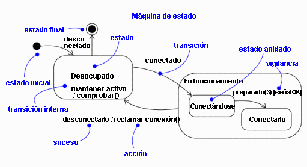

| Directriz: Diagrama de gráfico de estados |
 |
|
| Elementos relacionados |
|---|
ExplicaciónLas máquinas de estado se utilizan para modelar el comportamiento dinámico de un elemento de modelo, y más específicamente, los aspectos dirigidos por sucesos del comportamiento del sistema (consulte el apartado Concepto: Sucesos y señales). Las máquinas de estado se utilizan específicamente para definir un comportamiento dependiente del estado, o el comportamiento que varía dependiendo del estado en que se encuentran los elementos de modelo. Los elementos de modelo cuyo comportamiento no varía con el estado del elemento, no requieren máquinas de estado para describir su comportamiento (estos elementos son habitualmente clases pasivas cuya responsabilidad principal es gestionar datos). En concreto, las máquinas de estado deben utilizarse para modelar el comportamiento de clases activas que utilizan sucesos de llamada y sucesos de señal para implementar sus operaciones (como transiciones en la máquina de estado de la clase). Una máquina de estado consta de estados, enlazados por transiciones. Un estado es una condición de un objeto en que se lleva a cabo alguna tarea o donde se espera un suceso. Una transición es una relación entre dos estados que se desencadenan con algún suceso, que efectúa ciertas acciones o evaluaciones, y que resulta en un estado final específico. Los elementos de una máquina de estado se ilustran en la Figura 1.  Figura 1. Notación de máquina de estado. Un editor sencillo se puede visualizar como máquina de estado finita con los estados Vacío, Esperando un mandato y Esperando texto. Los sucesos Cargar archivo, Insertar texto, Insertar carácter y Guardar y salir generan transiciones en la máquina de estado. La máquina de estado del editor se ilustra en la Figura 1 a continuación.
Figura 2. La máquina de estado para un editor sencillo. EstadosUn estado es una condición de un objeto en que se lleva a cabo alguna tarea o donde se espera un suceso. Un objeto puede mantenerse en un estado durante una cantidad de tiempo finita. Un estado tiene diferentes propiedades:
Tal como se ilustra en la Figura 1, hay dos estados especiales que se pueden definir para la máquina de estado de un objeto. El estado inicial indica el lugar de inicio por omisión para la máquina de estado o subestado. Un estado inicial se ilustra como un círculo lleno. El estado final indica la terminación de la ejecución de la máquina de estado o que el estado incluido se ha completado. Un estado final se representa como un círculo negro lleno rodeado por un círculo sin llenar. En realidad, los estados inicial y final son seudoestados. Ninguno de ellos puede tener los componentes habituales de un estado normal, excepto un nombre. Una transición de un estado inicial a un estado final puede tener el complemento completo de características, incluida una condición de vigilancia y una acción, pero puede no tener un suceso desencadenante. Transiciones
Una transición es una relación entre dos estados que indican que un objeto que se encuentra en el primer estado realiza acciones determinadas y entrar en un segundo estado cuando ocurra un suceso especificado y se satisfagan las condiciones especificadas. En dicho cambio de estado, la transición se "lanza". Hasta que se lanza la transición, el objeto se encuentra en el estado "origen" y una vez que se ha lanzado, se encuentra en el estado de "destino". Una transición tiene varias propiedades:
Una transición puede tener varios orígenes, en cuyo caso representa una unión de varios estados concurrentes, así como varios destinos, en cuyo caso representa una bifurcación a varios estados concurrentes. Desencadenantes de sucesosEn el contexto de la máquina de estado, un suceso es una aparición de un estímulo que puede desencadenar una transición de estado. Los sucesos pueden incluir sucesos de señal, sucesos de llamada, el paso del tiempo o un cambio de estado. Una señal o llamada puede tener parámetros cuyos valores estén disponibles para la transición, incluidas expresiones para las condiciones de vigilancia y la acción. También puede haber una transición sin desencadenante, representada por una transición sin desencadenante de sucesos. Estas transiciones, también denominadas transiciones de terminación, se desencadenan implícitamente cuando el estado de origen ha completado su tarea. Condiciones de vigilanciaUna condición de vigilancia se evalúa después de que se produzca el suceso desencadenante para la transición. Puede haber varias transiciones a partir del mismo estado origen y con el mismo desencadenante de suceso, siempre que las condiciones de vigilancia no se solapen. Una condición de vigilancia se evalúa sólo una vez para la transición en el momento en el que produce el suceso. La expresión booleana puede hacer referencia al estado del objeto. AccionesUna acción es un cálculo global ejecutable, lo que significa que no la puede interrumpir un suceso y, por tanto, se ejecuta hasta su terminación. A diferencia de una tarea, que pueden interrumpir otros sucesos. Las acciones pueden incluir llamadas de operaciones (al propietario de la máquina de estado, así como a otros objetos visibles), la creación o destrucción de otro objeto, o bien, el envío de una señal a otro objeto. En el caso del envío de una señal, el nombre de señal tiene el prefijo de la palabra clave 'send'. Acciones de entrar y salirLas acciones de entrar y salir permiten enviar la misma acción cada vez que se entra o sale del estado, respectivamente. Las acciones de entrar y salir permiten llevarlo a cabo sin tener que poner explícitamente acciones en cada transición entrante o saliente. Las acciones de entrar y salir pueden no tener argumentos o condiciones de vigilancia. Las acciones de entrar que se encuentran en el nivel superior de una máquina de estado para el elemento de modelo pueden tener parámetros que representen los argumentos que recibe la máquina al crear el elemento. Transiciones internasLas transiciones internas permiten manejar los sucesos en el estado sin salir del estado, evitando así el desencadenamiento de acciones de entrar o salir. Las transiciones internas pueden tener sucesos con parámetros y condiciones de vigilancia y representan, básicamente, manejadores de interrupción. Sucesos diferidosLos sucesos diferidos son aquellos cuyo manejo se pospone hasta que se activa un estado en el que el suceso no se aplaza. Cuando se activa dicho estado, se desencadena la aparición del suceso y puede causar transiciones como si acabara de ocurrir. La implementación de los sucesos diferidos requiere la presencia de una cola de sucesos interna. Si se produce un suceso pero se lista como diferido, se pone en cola. Los sucesos se quitan de la cola tan pronto como el objeto entra en un estado que no difiera dichos sucesos. SubestadosUn estado sencillo es un estado que no tiene subestructura. Un estado con subestados (estados anidados) se denomina estado compuesto. Los subestados se pueden anidar en cualquier nivel. Una máquina de estado anidada puede tener, como máximo, un estado inicial y un estado final. Los subestados se utilizan para simplificar máquinas de estado planas complejas al mostrar que algunos estados sólo son posibles dentro de un contexto concreto (el estado inclusivo).
Figura 3. Subestados. Desde un origen externo a un estado compuesto inclusivo, una transición puede dirigir el estado compuesto o dirigir un subestado. Si el destino es el estado compuesto, la máquina de estado anidada debe incluir un estado inicial, a la que pasa el control después de pasar al estado compuesto y de enviar la acción de entrada (si procede). Si el destino es el estado anidado, el control pasa al estado anidado después de enviar la acción de entrada del estado compuesto (si procede) y, a continuación, la acción de entrada del estado anidado (si procede). Una transición que conduce fuera de un estado compuesto puede tener como origen el estado compuesto o un subestado. En cualquier caso, en primer lugar el control abandona el estado anidado (y se envía su acción de salir, si existe alguna) y, a continuación sale del estado compuesto (y se envía su acción de salir, si existe alguna). Una transición cuyo origen es el estado compuesto, esencialmente, interrumpe la tarea de la máquina de estado anidado. Estados de historialA no ser que se especifique lo contrario, cuando una transacción entra en un estado compuesto, la acción de la máquina de estado anidado vuelve a iniciarse en el estado inicial (a menos que la transición dirija directamente a un subestado). Los estados de historial permiten que la máquina de estado vuelva a entrar en el último subestado activo antes de salir del estado compuesto. En la Figura 3 se presenta un ejemplo de la utilización de los estados de historial.
Figura 4. Estado de historial. Técnicas de modelado comúnNormalmente, las máquinas de estado se utilizan para modelar el comportamiento de un objeto a lo largo de su ciclo de vida. En especial, se necesitan cuando los objetos tienen comportamiento dependiente del estado. Los objetos que pueden tener máquinas de estado incluyen clases, subsistemas, guiones de uso e interfaces (para afirmar los estados que debe satisfacer un objeto que realiza la interfaz). En el caso de los sistemas de tiempo real, también se utilizan máquinas de estado para cápsulas y protocolos (para afirmar los estados que debe satisfacer un objeto que realiza el protocolo). No todos los objetos necesitan máquinas de estados. Si un objeto tiene un comportamiento simple, por ejemplo, sólo almacena o recupera datos, el comportamiento del objeto es de estado invariable y, prácticamente, la máquina de estado carece de interés. El modelado del ciclo de vida de un objeto implica tres cuestiones: especificar los sucesos a los que puede responder el objeto, la respuesta a dichos sucesos y el impacto del pasado en el comportamiento actual. Modelar el ciclo de vida de un objeto también implica decidir el orden en el que puede responder el objeto de modo significativo a los sucesos, empezando en el momento de la creación del objeto y continuando hasta su destrucción. Para modelar el ciclo de vida de un objeto:
Consejos y sugerencias
Diseño con máquinas de estado abstractasUna máquina de estado abstracta es una máquina de estado a la que se debe añadir más detalle antes de que se pueda utilizar para objetivos prácticos. Se pueden utilizar máquinas de estado abstractas para definir comportamiento genérico reutilizable, que se perfecciona en elementos de modelo subsiguientes.
Figura 5. Una máquina de estado abstracta. Considere la máquina de estado abstracta de la Figura 5. La máquina de estado simple que se ilustra es representativa del nivel de comportamiento más abstracto (el autómata "control") de varios tipos de elementos diferentes en sistemas dirigidos por sucesos. Aunque comparten este formato de alto nivel, los diferentes tipos de elementos pueden tener comportamientos detallados muy distintos en el estado de ejecución dependiendo de su objetivo. Por este motivo, lo más probable es que esta máquina de estado se defina en alguna clase abstracta que sirva como clase raíz para diferentes clases activas especializadas. Por tanto, vamos a definir dos perfeccionamientos diferentes de esta máquina de estado abstracta, utilizando la herencia. Ambos perfeccionamientos, R1 y R2, se muestran en la Figura 6. Con el objeto de simplificar su comprensión, los elementos heredados de la clase padre se han dibujado utilizando una pluma de color gris.
Figura 6. Dos perfeccionamientos de la máquina de estado de la Figura 5. Los dos perfeccionamientos se diferencia claramente en el modo de descomponer el estado de ejecución y también de ampliar la transición de inicio original. Por supuesto, estas opciones sólo se pueden realizar una vez que se conoce el perfeccionamiento y, por tanto, no se podrían realizar con una transición única de extremo a extremo en la clase abstracta. Estados de cadenaLa posibilidad de "continuar" tanto las transiciones entrantes como las transiciones salientes es fundamental para el tipo de perfeccionamiento descrito más arriba. Puede parecer que los puntos de entrada y los estados finales, combinados con transiciones, son suficientes para facilitar la semántica. Desgraciadamente, no basta cuando se deben ampliar numerosas transiciones diferentes. Lo que necesita el patrón de comportamiento abstracto es un procedimiento para encadenar dos o más segmentos de transición, en el que todos se ejecuten en el ámbito de un solo paso de ejecución hasta el final. Significa que las transiciones que entran en un estado jerárquico se dividen en la parte entrante que, en efecto, termina en el límite de estado y una ampliación que continúa dentro del estado. Asimismo, las transiciones salientes que proceden de un estado anidado jerárquicamente se segmentan en una parte que termina en el límite de estado inclusivo y una parte que continúa del límite de estado al estado de destino. Este efecto se puede lograr en UML por medio de la introducción del concepto estado de cadena. Lo modela un estereotipo (<<chainState>>) del concepto Estado de UML. Se trata de un estado cuyo único objetivo es "encadenar" transiciones automáticas nuevas (sin desencadenantes) en una transición de entrada. Un estado de cadena no tiene ninguna acción de entrar, estructura interna, tarea interna o acción de salir. Tampoco tiene transiciones que desencadenen los sucesos. Puede tener cualquier número de transiciones de entrada, y una transición saliente sin suceso desencadenante; esta transición se lanza automáticamente cuando una transición de entrada activa el estado. El objetivo del estado es encadenar una transición de entrada a una transición de salida separada. Entre las transiciones de entrada y la transición de salida encadenada, una conecta al otro estado del estado contenedor y la otra conecta a otro estado fuera del estado contenedor. El objetivo de presentar un estado de cadena es separar la especificación interna del estado contenedor de su entorno externo; es cuestión de la encapsulación. En efecto, un estado de cadena representa un estado de "paso a través" que sirve para encadenar una transición a una transición de continuación específica. Si no se define ninguna transición de continuación, la transición termina en el estado de cadena, y se debe lanzar alguna transición en un estado inclusivo para que, finalmente, las cosas avancen. El segmento de máquina de estado de ejemplo de la Figura 7 ilustra estados de cadena y su notación. Los estados de cadena se representan en un diagrama de máquina de estado por medio de pequeños círculos blancos situados en el estado jerárquico adecuado (esta notación es similar a los estados inicial y final, a los que se parecen). Los círculos son iconos de estereotipos del estereotipo del estado de cadena y, por lo general, se dibujan cerca del límite para mayor comodidad. (De hecho, una variación de notación sería dibujarlas en el borde del estado inclusivo).
Figura 7. Estados de cadena y transiciones encadenadas. La transición encadenada de este ejemplo consta de los tres segmentos de transición encadenados, e1/a11-/a12-/a13. Cuando se recibe la señal e1, se toma la transición etiquetada como e1/a11, se ejecuta su acción a11 y, a continuación, se alcanza el estado encadenado c1. Después de ello, se toma la transición de continuación entre c1 y c2 y, por último, puesto que c2 también es un estado de cadena, la transición de c2 a S21. Si todos los estados junto con las vías de acceso tienen acciones de entrar y salir, la secuencia real de la ejecución de la acción se realiza tal como se indica a continuación:
Todo ello se ejecuta en el ámbito de un solo paso de ejecución hasta el final. Se debe comparar con respecto a la semántica de ejecución de acciones de la transición directa e2/a2, que es:
|

© Copyright IBM Corp. 1987, 2006. Reservados todos los derechos. |